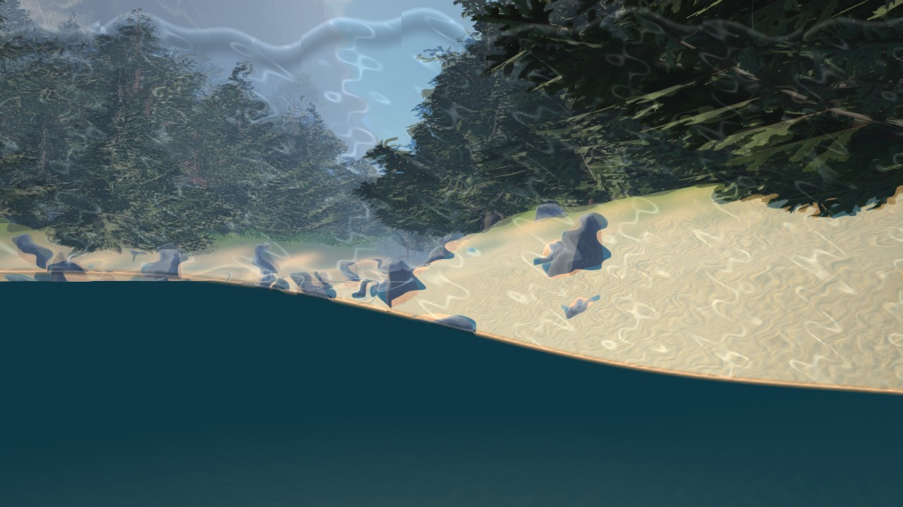

PRISMA: камера на границе воды — ватерлиния, плёнка и капли
Когда камера у поверхности, кадр делится волнистой ватерлинией с мениском; после выныривания всё, что было под водой, покрыто преломляющей плёнкой, которая стекает к уровню воды и оставляет ручейки и капли.


Эффект lensWater для каждого пикселя проверяет точку линзы против волнующейся плоскости воды из NEREID: ниже линии — подводная оптика, выше — сухая картинка, по линии — яркий преломляющий мениск. Под водой на линзе ничего не стекает.
После выныривания плёнка держится первую треть sheetTime, затем её рваный край стекает вниз; за ней остаются извилистые ручейки с каплей на конце и круглые капли-линзы с бликами, которые высыхают за dryTime. Все параметры настраиваются и эффект отключается.
- Проверено
- Mac (Metal), ревью‑копия AlpineValley: запись ныряния в реальном времени (кадр раз в ~0,35 с, видео собрано с реальной скоростью); тест prisma_lens_water.
- Ограничения
- Нижняя сторона поверхности (полное отражение) пока не рисуется отдельно; другие бэкенды не проверены визуально.